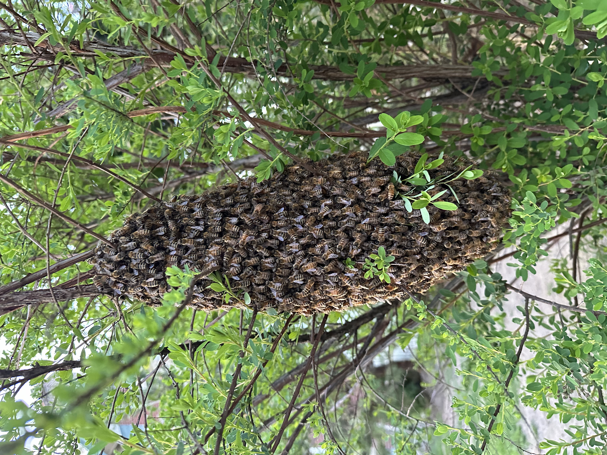

A swarm on your bush, fence, or car
A clump of bees at chest height on a boxwood, wrapped around a fence post, hanging off the playset, or — this happens more than you'd think — clustered on a car mirror. Low swarms are the easiest collection there is and completely free. They're also the most urgent call, not because they're dangerous but because they're right where your kids and your dog are.
This is the gentle version of honey bees
It looks alarming at three feet away. It is genuinely not. A swarm is a colony in transit — the old queen and about half the workers, having left home to found a new one, resting while scout bees search for a permanent cavity.
They have nothing to defend. No comb, no brood, no honey stores. They also filled up on honey before leaving, which makes them full and placid. We collect plenty of swarms without a veil. Being at eye level doesn't change any of that — a low swarm is no more defensive than one twenty feet up.
What being low does change is who can reach it. Keep children and pets away, don't let anyone poke it, and don't let a helpful neighbour spray it.

The awkward places we get called to
- On a car. Mirror, bumper, wheel arch, or the gap under an open tailgate. Don't drive it. Pulling away scatters the cluster at speed and can leave the queen and a few thousand bees inside your vehicle — a far worse problem than the one you started with. Park it, leave it, call.
- On a shrub or hedge at chest height. The classic, and the easiest job we do. Frequently the whole cluster and one small branch go straight into the box.
- On a fence post or rail. Straightforward. Bees get brushed or scooped rather than shaken.
- On a playset, trampoline frame, or sandbox edge. Rope the area off and call — this is the version we prioritise, for obvious reasons.
- On a mailbox, gas meter, or grill. Common, quick, and the only complication is usually the postal carrier.
- Low on a house wall or under a porch rail. Worth calling urgently. A cluster resting on a structure is one scout's decision away from moving into that structure.
Why today matters more than you'd think
A swarm stays clustered for as little as an hour or as long as a couple of days — however long the scouts take to reach agreement. Then the whole thing lifts off at once and moves in somewhere permanent.
And the somewhere is often a house. Soffits, wall voids, chimneys, and shed floors are all excellent cavities as far as bees are concerned. A swarm on your hedge is a free twenty-minute collection. The same bees in your soffit next week are a structural removal running several hundred dollars.
During swarm season — late April through June in Central PA — we prioritise same-day pickup on active swarms. Texting a photo with your town gets the fastest answer.
Four things that make it worse
- Spray it. You'd be killing a colony we'd have removed for free, and hardware-store spray on a cluster this size mostly just angers the survivors. There is no version of this where spraying is the right move.
- Hose it down. Soaks the cluster, scatters it into your shrubs, and makes collection much harder. Doesn't move them on.
- Knock it into a bag or a bin. People try. Without the queen the bees simply regroup, usually somewhere less convenient.
- Wait to see if they go on their own. They will — that's the problem. See above.
What collection looks like
- Text a photo with your town. We confirm it's honey bees rather than wasps — see honey bees or yellow jackets if you want to check first — and ask how long it's been there.
- We arrive with a hive box. On a low swarm the cluster is shaken, brushed, or scooped straight in. Get the queen and the rest walk in after her, which is genuinely worth watching from a few feet back.
- We wait for stragglers. Often until dusk so the flying bees rejoin the box, then it's closed up.
- It costs you nothing. Accessible swarms are free — the colony is the payment, and it goes on to one of our Central PA apiaries.
Common questions
It's on my car and I need to leave for work.
Call us before you do anything. If it genuinely can't wait, tell us on the phone and we'll talk you through it — but driving off with a swarm attached is how bees end up inside the car, and that's a much worse morning. Most low car swarms are a quick collection.
My kids play right there. Is it safe until you arrive?
Keep them inside or at the other end of the yard and it's fine — swarms sting almost nobody, but there's no reason to test it. Don't let anyone throw things at it or spray it. We prioritise swarms near play areas.
They're on my neighbour's fence but flying over my yard.
Doesn't matter whose fence — call anyway. We'll need whoever owns the property to be fine with us being there, but the collection is free either way and we'd much rather get them than have them move into somebody's wall.
It's November and there's a clump of bees on my bush.
Unusual, and worth a call rather than an assumption. Late-season clusters are sometimes a colony that's been disturbed or displaced rather than a true swarm, and their odds through winter are poor without help. Send a photo.
They've already gone. Should I do anything?
Watch the house for a day or two. If you see bees consistently going in and out of one point in the soffit, siding, or a vent, they've moved in and it's worth calling early — a colony that just arrived is by far the easiest structural removal. See bees in walls and bees in a soffit.
Swarm within arm's reach right now?
Free collection across Harrisburg, Hershey, Camp Hill, Mechanicsburg, Carlisle, Palmyra, and Central PA. Text a photo with your town for the fastest response — during swarm season we prioritise low swarms and anything near a play area.
Call or Text 717-379-3248